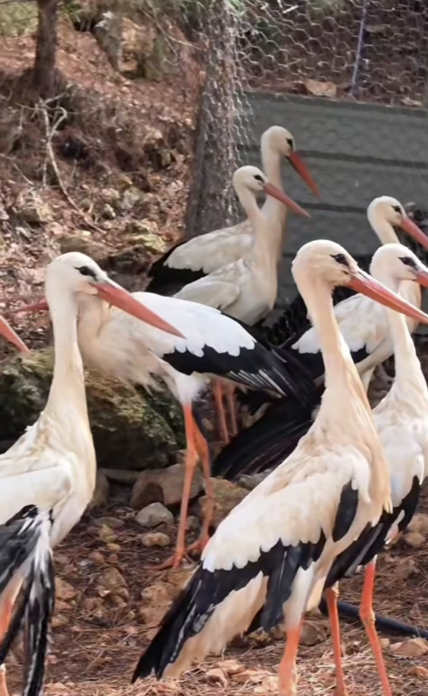
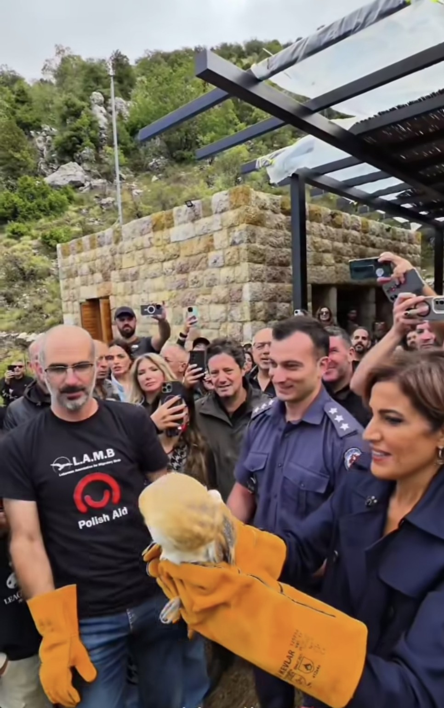

La ministre de l’Environnement, la Dre Tamara El Zein, a visité le centre de l’Association libanaise pour les oiseaux migrateurs à Jerjour, dans le district de Zgharta, pour découvrir les efforts de sauvetage, de soins et de réhabilitation des oiseaux blessés en vue de leur retour à la nature. La visite comprenait le relâcher d’oiseaux soignés et réhabilités dans la réserve naturelle de Horsh Ehden, à l’occasion de la Journée mondiale des oiseaux migrateurs.
Le programme comportait également une visite environnementale de la réserve pour découvrir sa biodiversité et ses richesses naturelles, avant de s’achever par l’ouverture d’une exposition d’insectes.

De la blessure à une nouvelle chance de voler
Cette visite met en lumière un travail qui se poursuit au-delà du moment du relâcher : accueillir un oiseau blessé, lui apporter des soins adaptés et suivre son rétablissement jusqu’à ce qu’il puisse retourner à l’état sauvage.
Le centre de l’association, présidée par le Dr Michel Sawan, accueille des oiseaux sauvages de différentes espèces, notamment des rapaces et des cigognes. Les soins comprennent l’isolement des cas qui le nécessitent, le traitement des plaies et des fractures, puis la réhabilitation. Des blessures entraînant un handicap permanent peuvent empêcher le relâcher ; l’oiseau continue alors à être pris en charge dans les installations de l’association.
Les images du site montrent un groupe de cigognes blanches dans un espace de soins clôturé : une scène qui résume le rôle du centre comme lieu où reprendre des forces avant un éventuel retour dans le ciel.
Cigognes et rapaces retrouvent la nature
En 2025 et 2026, les activités de l’association ont documenté d’autres étapes du retour des oiseaux à la nature. Le 5 avril 2025, elle a organisé, avec l’ambassade de Pologne à Beyrouth, un relâcher comprenant des cigognes ayant suivi une longue réhabilitation après avoir été sauvées de la chasse illégale.
En juin 2026, le relâcher d’une bondrée apivore a été annoncé en coopération avec la municipalité de Metrit, dans le Koura, après que l’oiseau a reçu des soins au refuge de l’association et s’est rétabli de sa blessure. L’activité portait un message sur la protection des rapaces et leur rôle dans les milieux agricoles, tout en associant la communauté locale au sauvetage des oiseaux.
Feliks… un sauvetage par-delà les frontières
Parmi les récits marquants de 2026 figure celui de Feliks, un aigle impérial parti de Serbie et arrivé en Syrie, où il est tombé aux mains de chasseurs illégaux.
L’Association libanaise pour les oiseaux migrateurs a contribué à son sauvetage. Il a passé plus de six mois dans un refuge du nord du Liban avant d’être rapatrié en Serbie. Une équipe spécialisée y a poursuivi ses soins et son entraînement au vol, jusqu’à son relâcher près de Subotica le 6 août 2026. Le suivi de ses déplacements a montré qu’il avait atteint, en quelques jours, la frontière entre la Slovaquie et la Pologne.
Ce récit montre que protéger un oiseau migrateur peut exiger une coopération internationale : son parcours relie des régions et des pays qui partagent la responsabilité d’assurer sa sécurité.
Une protection qui se poursuit après le relâcher
Au-delà du sauvetage, l’association sensibilise à la valeur de la faune sauvage. En juillet 2025, elle a collaboré avec le service de l’agriculture du Liban-Nord à un séminaire dans le Danniyeh consacré au rôle des oiseaux et des animaux sauvages dans la protection des cultures et des forêts.
La visite de la ministre de l’Environnement réunit ces dimensions : des soins au centre, un retour à la nature et une attention portée aux réserves et à la biodiversité. Mais le sauvetage ne s’achève pas lorsqu’un oiseau déploie ses ailes. Sa sécurité reste liée à la protection de ses habitats et de ses routes migratoires, au respect des lois sur la chasse et à la prévention des atteintes aux espèces protégées.
Images : captures d’une vidéo publiée sur la page Lebanon Heaven.